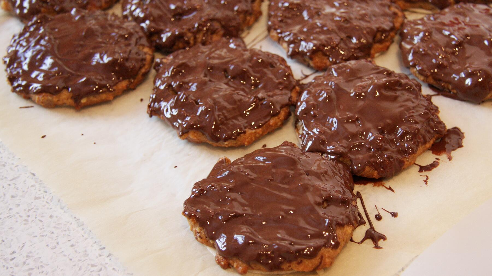

Zurück zur Übersicht
Weiche Schoko-Lebkuchen
Weiche Lebkuchen mit Haselnüssen, Mandeln und Nuss-Nougat-Creme auf Backoblaten, noch warm mit Zuckerguss bestrichen. Eine Portion entspricht einem Lebkuchen.
- Zeit
- 35 Min.
- Schwierigkeit
- leicht
- Kategorie
- Süßgebäck
- Ernährung
- vegetarisch
Zutaten
Portionen
Für die Lebkuchen
- 4Eier (Größe S, oder 3 Eier Größe M)
- 140 gbrauner Zucker
- 2 PackungenVanillezucker
- 240 gDinkelmehl Type 630
- 4 TLWeinstein-Backpulver
- 3 ELNuss-Nougat-Creme
- 150 ggemahlene Haselnüsse
- 100 ggemahlene Mandeln
- 1 TLZimt
- 3 TLLebkuchengewürz
- 1 ELBackkakao
- 20Backoblaten (7 cm)
Für den Zuckerguss
- 150 gPuderzucker
- 1½ ELWasser (1–2 EL)
Zubereitung
- Die Eier mit dem Zucker und dem Vanillezucker 2–3 Minuten schaumig rühren. Die restlichen Zutaten dazugeben und gut unterrühren. Die Masse ist etwas klebrig, man kann auch mit Handschuhen weiterarbeiten.
- Ein Backblech mit Backpapier auslegen und die Oblaten darauf verteilen.
- Je einen pflaumengroßen Klecks auf die Oblaten geben und die Oberfläche mit nassen Fingern glattstreichen. Einen großen Rand braucht es nicht, die Masse darf beim Backen ruhig etwas über den Rand gehen.
- Bei 160 °C Ober-/Unterhitze etwa 14 Minuten backen.
- Den Zuckerguss anrühren und die warmen Lebkuchen damit bestreichen.
Glutenfrei: Geht auch glutenfrei: Dann Mehl von Schär (Kuchen & Kekse) nehmen und je eine TL-Spitze Xanthan und Flohsamenschalenpulver dazugeben.